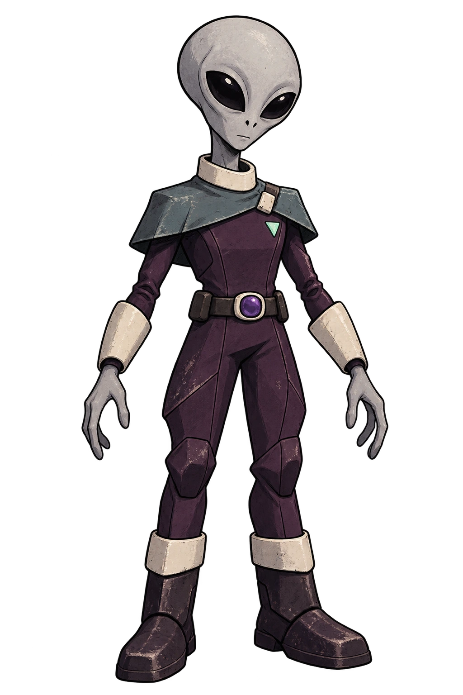
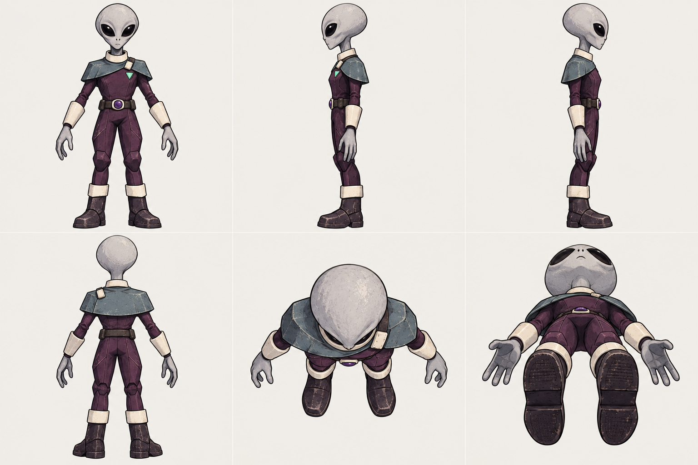

VEY / MANUAL PRODUCTION PILOT 01
One character.
Every side.
A complete reference pack and a supervised paint and motion study. Compare the result before its method becomes part of the automatic studio.

{kind=link}

Front · Left · Right / Back · Top · Bottom. Top and bottom are perspective detail guides. The four cardinal views guide the model and paint.
PAINTED SURFACE / CAPTURED MOVEMENT
See it in motion.
Walk and run come from optical motion capture, fitted to hand-placed joints. Switch views, slow the cycle and inspect feet, knees, hands and the mantle.
Loading Vey...
Motion chart
One complete cycle. Left and right foot height, sampled from the rigged cycle. Walk and run keep their captured cadence.
REPRODUCIBLE, STILL UNDER REVIEW
The steps are saved.
Art approval and production acceptance remain yours. This pilot supplements the existing pipeline; it is not silently promoted into the default.
- Reference
Preserved hero art, six directional illustrations, named material colors and an export prompt. Individual views accompany the presentation sheet.
- Shape
Reuse the existing image-generated Hunyuan geometry. Weld duplicate vertices and simplify a separate copy while retaining the original.
- Paint
Four-view UV baking uses surface normals and depth tests. Registered silhouette spans align the reference. Uncovered surfaces are marked in the coverage map; rear eyes are never invented.
- Rig & motion
A hand-placed skeleton with normalized heat skinning. CMU walk/run capture supplies limb movement and pelvis translation; complete cycles retain their timing.
- Review & polish
Check the front, back, sole coverage, deformation and ground contact. Compare against the previous model. Promote this recipe only after your review.
{kind=link}
Provenance, limitations and additional tools
Modly is a local workflow host for engines such as Hunyuan and Trellis. Tripo can consume separate front/left/back/right references. Kimodo is a researched future local motion option. This pilot uses the installed tools plus two selected motion captures; it does not claim execution in those additional applications.
The data used in this project was obtained from mocap.cs.cmu.edu. The database was created with funding from NSF EIA-0196217. Source takes: 07_01 walk and 09_01 run. Finger channels were not captured and are not used.